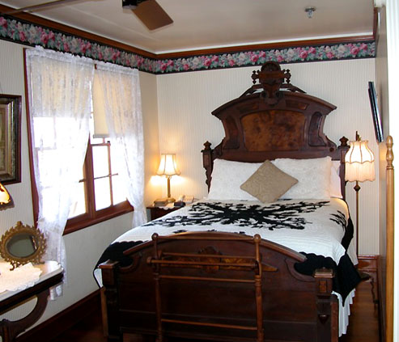
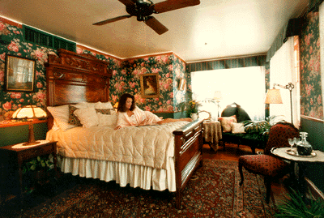
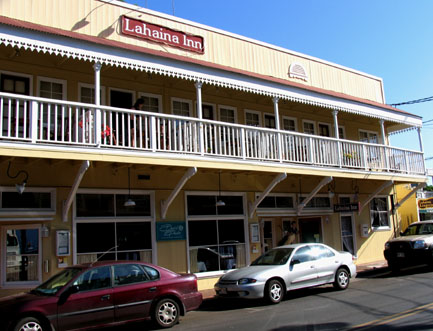
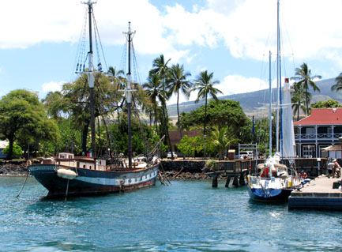
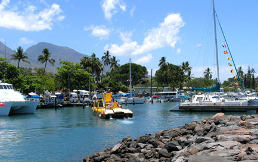
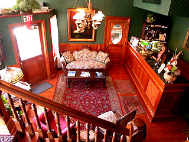
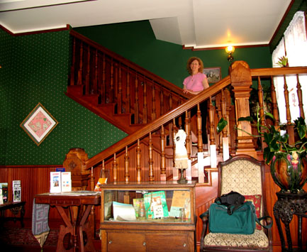
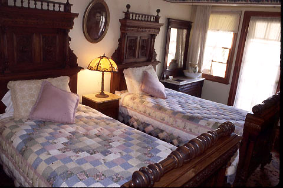
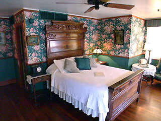

| Home / Dive Resorts / Live-Aboards / Snorkeling / Who We Are / Book a Trip |
© Copyright U.S. Dive Travel Network.
Here's the most relaxing, cost-efficient way to beat Maui prices.
Laid-back Old Lahaina Town is the ideal locale for a Maui Vacation,
whether Maui Honeymoon, Maui Snorkeling, or Maui Scuba Diving trip ....
|
 |
 |
|
 |
|
Two significant reasons why: meal costs & transportation costs are lower. First, in Lahaina village you can walk almost everywhere you need to go. Next, meals in Lahaina will run at least 25% more economical than in Wailea or the Ka'anapali Coast area. This means big-time bang for your Maui vacation buck. What's more, this classic country-style guest inn is perfectly located -- within quick strolling distance from the best scuba center in the village -- LAHAINA DIVERS. We have worked with LAHAINA DIVERS for more than 14 years now, & since day one they have had the top-rated diving yachts on Maui -- big powerful Newton 46s -- the "Dauntless & the Dominion." These boats pack two Cummins turbo-Diesel 430s at the stern, & they really haul when the skip needs to. These boats are roomy enough to accommodate 49 passengers, but they typically carry no more than 20-24 pax at a time. LAHAINA DIVERS offers Nitrox, even custom blends, as well as 56 cf & 100 cf tanks for extra petite gals & extra-large guys.
Clean, quiet, managed by pleasant folks who bend over backwards to accommodate you, LAHAINA INN is nestled smack dab in the heart of this vibrant, colorful village. LAHAINA INN is only walkin' minutes from all the nighttime action, the best restaurants, art galleries, shops & dessert locales; & it's less than 3 blocks easy jaunt from the Lahaina Boat Harbor, where LAHAINA DIVERS two beautiful vessels are moored. LAHAINA INN + LAHAINA DIVERS = a thrifty, convenient, comfortable alternative to the big-buck high-rises on the Ka'anapali Coast, or the prefab crowded hotels in the Kihei area, or the tourist-inundated condo villages of NW Maui. We love Lahaina village, folks; it's a li'l bit country & a l'il bit rock 'n' roll. Ideal for a relaxing, refreshing Maui snorkeling vacation package, or Maui diving vacation, or Maui honeymoon escape.
Once you experience LAHAINA INN, we feel confident you will likely never wrestle with the $350-$450 / night median price at so many coastal hotels on West Maui. This place has our attention, & it deserves yours. LAHAINA INN has a such a cozy, refreshing small-town feel to it, almost an 1890s Old West motif, that you half expect Butch Cassidy & the Sundance Kid, all grins & handshakes, to come striding around a corner & invite you down the street for margaritas & a poker game. We believe it's only a matter of months before word of mouth kicks in & LAHAINA INN becomes the darling of the 30-something to 50-something set -- everything from newlyweds to folks raising kids, or saving for retirement -- people who are not afraid to ask for a good deal.
All lodging prices are per room / night + 13.5 % Hawaii state sales tax + USDT tariff (subject to possible change each season). Prices vary by season, from about $150 - $195 per room night + tax. And all prices are subject to frequent special discounts as local inventory shifts with seasonal demand. This lodge is a GREAT value; you'll love it! Please feel free to call 952-953-4124 & we'll secure the lowest seasonal specials for you,for these room types:
Two-tank Back Wall -- Molokini Dive.
Check-in: 7:00 AM.
Approx. Return: 1:00 PM.
Includes: tanks, weights, continental breakfast, beverages, snacks and full deli lunch.
Dive sites include the famous far-side of Molokini Crater. Again, enjoy a full day of fun exploration.
Two-tank Turtle Reef Dive.
Check-in: 12:00 PM.
Approx. Return: 4:30 PM.
Includes: beverages, snacks, all equipment.
Make two dives at a single, shallow-water location along east Lana'i or west Maui. The turtle sightings
are really something on many of these dives. These Hawaiian sea turtles can weigh as much as 250 lbs.
Makes a fun, easy orientation to Hawaiian diving for certified and non-certified divers.
Four-tank All-day Dive.
Lanai + Turtle Reef or Molokini + Turtle Reef.
Check-in: 7:00 AM.
Approx. Return: 4:30 PM.
Includes: tanks, weights, continental breakfast, beverages, snacks.
Add our two-tank turtle reef dive to a two-tank morning inter-island dive for just $60 more.
Half hour break (approximate) provided for lunch ashore.
2-tank Night Dive (from shore).
Check-in: Time varies with sunsets each season.
Approx. Return: 9:00 PM.
Includes: all gear. Locations vary, & all night diving sites will be selected for do-able currents & safer conditions. Be sure to brush up on your night-time scuba skills before trying these adventures.
All Lahaina Divers scuba diving charters include use of tanks, weight belts, mask, snorkel and fins. Rental wetsuits, BCs, regulators, and dive lights available for $8-10 per item, per charter, unless otherwise
specified. You pay on the island for all gear rentals. Non-diving passengers and snorkelers may accompany certified divers for $89 on all two-tank charters. Tax is extra. Children under 12 are to be
accompanied by a parent or guardian at all times, in or out of the water -- no exceptions to this safety rule !
For all Maui dive trips, all snorkelers must follow the same standard vessel safety procedures as any regular scuba diver. Scuba divers are given priority over snorkelers, in case of high client volumes on vessels.
Here is an affordable yet surprisingly luxurious way to beat the high cost of dive trips & snorkeling vacations on Maui. This lovely 3-star guest inn -- LAHAINA INN -- only a couple minutes stroll from Lahaina's scuba diving nerve center, is one one of our best secret getaways on an island where vacation costs are spiraling out of control. You will be quite pleased at the high quality & low price of this Maui diving & Maui snorkeling package. Here is one of the best Maui honeymoon or Hawaii vacation bargains we have discovered since the early 1990s.
The Lahaina Inn & the Lahaina Divers scuba center + the Lahaina Boat Harbor are only a few quick minutes walk from each other. When Maui is crowded in seasonabl peaks like Christmas, Spring Break or summertime, the Lahaina Inn + Lahaina Divers combo package beats the traffic, beats the prices & rewards the vacationer with a bona fide value that will be self-evident the first day, we assure you. In more than 15 years of visits to the Hawaiian Islands, a total of 59 weeks of property inspections, dive vessel inspections, photo shoots & dive trips, the Lahaina Divers + Lahaina Inn duo emerges as one of the best pure deals we have found anywhere in the state of Hawaii.
You will save up to approx $170 per night below the costly Ka'anapali & Wailea sectors of Maui & still enjoy the same delightful creature comforts + super-swift access to Maui's most well-known scuba diving center. A dive op that's respected widely in Hawaii, Lahaina Divers has two big power yachts that are among the largest & fastest Coast Guard certified diving vessels in the Hawaiian Islands. You can even dive the unspoiled classic sites of Lanai island -- across the channel from Maui -- on these sleek Lahaina Divers vessels. At least 3-4 times a week there are exciting day trips from Maui across the big channel to dive at Lanai, the exclusive isle where Bill Gates was married. Plus they visit the famous Molokini Crater, both inside & outside wall, several times a week.
We have known Greg Howeth, the owner of Lahaina Divers, for more than 25 years & he is salt of the earth, just plain easy to work with & a gentleman of his word. His crew is smart, savvy & friendly as the day is long. These guys are pros, from guages to gunwales, & they have served scores of our good Maui diving clients since the early 1990s. For scuba divers, Lahaina Divers is the class act on the beach-rich isle of Maui, we feel confident in sharing with divers who love Hawaii as much as we have these last 15 years. And Lahaina Inn is a pearl of a location, with prices so vastly lower than the big beach hotels, it makes staying right in the heart of Lahaina village a treat, for solos, Maui honeymoon couples, families with children, you name the demographic slice, there's a smile & a clean room ready for you. :)
Your Maui Guest House / Lahaina Divers Package includes: Lodging in Lahaina's top value 3-star hotel + boat diving with Maui's best & most experienced dive operation. Lodging sales tax of about 13.5% (required by Hawaii Legislature) is extra. Meals, drinks & air tickets also are extra package costs.
For many years, Lahaina Divers has been one of the respected mainstays of Hawaii diving. This long-standing Maui company is proud of its 50-foot luxury speed-yachts & has been recognized as the class act among Maui's many dive operators. We have beens sending satisfied Maui scuba diving clients to Lahaina Divers since 1992, countless scores of mainly US, Canadian & European divers. The divemasters at Lahaina Divers are skilled & personable & the vessels are state of the art in comfort & diving ease. Lahaina Divers offers the two largest & fastest dive boats on Maui, & among the best dive vessels in the state of Hawaii at large, complete with wide diver-entry doors & ladders, spacious enclosed cabins with ample gear stowage, plus heads & showers. These Lahaina Divers vessels have excellent safety records & a high ratio of professional guides to guests, so that everybody is well cared for, but nobody will feel regimented too strictly underwater. Their philosophy is that Maui scuba diving should be low-key, relaxing & entertaining.
Lahaina Divers was Maui's first PADI 5 star Dive Center & its first PADI Instructor Development Center as well. Lahaina Divers for many years has been the last word in Maui diving. You can rent snorkel gear as well as scuba gear any day you wish, at reasonable rates, & snorkelers are always welcome on the afternoon dive vessels, when space permits, for a nominal fee, normally about half a diver's fee.
Clients of U.S. Dive Travel's Lahaina Divers package will get free tropical munchies on the morning 2-tank trips to Lanai & Molokini Crater; or lunch on the 4-tank trips -- just another service of this smooth & personable operation. You'll be really glad you chose Lahaina Divers & not Brand X on Maui. If you do get over to Maui (you know, "Here Today, Gone to Maui !") be sure not to pass up the chance for some primo Lanai diving, among the best reef & archway environments in all of Hawaii. From Maui's western flanks to Lanai, this is one sweet spot in Hawaii diving, for certain, our 15 trips to the Hawaiian Islands have proven, again & again.
|
 |
 |
Contrary to conventional wisdom, the best Maui scuba diving is NOT at
Molokini Crater, despite the great press that Molokini gets year after year. Molokini Crater
is to Maui as Mount Rainier is to Seattle: cool, close, imbued with legend. But everybody goes to both,
in fact thousands of good folks each year, so there are places where Maui County corals are a bit less,
shall we say, eagerly visited by the masses -- whether snorkelers or scuba divers.
Yes, Virginia, there's a lot more to
Maui diving than this little croissant of brownish lava jutting from the Pacific Ocean. Sure the drift dives off the
back side of Molokini Crater are invigorating big critter encounters with some fun burly currents.
But the Maui divemasters & the locals would agree that some of the best Maui scuba diving in
this sector of Hawaii is along the southern & southwestern
shores of Lanai island, a private island about 10 miles West of Maui, that's
known for its dramatic undersea lava tubes, brilliant coralheads, pinnacles
& mysterious cathedral archways. To see the morning sun filtering through
the vaulted ceilings of these lava domes off Lanai, as hundreds of multi-colored
fish of many species flit every which way, is life at its best underwater. That's Lanai diving & snorkeling the way we always
remember it -- the lava soul of Hawaii diving.
After Niihau's leeward shore & Molokai's South Shore, diving southern
Lanai is the best part of the Hawaii diving spectrum -- in terms of abundant
coral & fish species, great lava seascapes, & surprises from rays
& whitetips to dancing eels & nudibranchs. In short, Lanai diving is really the best of
available Maui diving options, we feel. We even like the sound of the phrase, "Lanai diving." Don't you think that "Lanai diving" is a bit
reminiscent of a Spring Break party stunt, perhaps?
|
 |
 |
|
 |
 |
Maui for years has offered among the highest hotel rates of all of the Hawaiian Islands, & for good reason. It has wonderful sights to offer, awesome beaches & it attracts an upscale crowd from the mainland. Many West Coast vacationers choose Maui over the other Neighbor Islands because it has so much to offer; thus the demand factor keeps prices high. That's why this package is the ideal way to sidestep West Maui's expensive hotels & still enjoy quality lodging with a Hawaiian "feel" to it, plus sweet-spirited service & memorable scuba diving days with Lahaina Divers.
You couldn't wish for a better Hawaii hotel location than the Lahaina Inn, we feel. The hotel is a quick stroll from the dive shop, & very close to Lahaina's beaches, harbor, dining, entertainment & fine art galleries. You never have to worry about a parking place at the Lahaina Inn. Never. Just stroll a couple minutes to anywhere your heart desires & avoid the hassles & stress of driving. Maui's expensive dive resorts are on the ocean, pure & simple. That makes Lahaina Inn a kind of unsung gem on Maui, one of few really top-value economy hotels on this exorbitant island. Dive resorts do not need to be flamboyant to be great. Better to save at the Lahaina Inn then spend the extra bucks on more scuba diving. Who needs a $350 - $500 / night room on Maui, when you're unconscious most of the time you're in it, anyway, right? (I said, er, most of the time!)
At the Lahaina Inn, our favorite 3-star guest inn in downtown Lahaina, all rooms offer A/C & antique furnishings, plus warm neighborly service from the staff. The owners are the prime staffers & they truly serve you with the old-fashioned aloha spirit; & you'll feel right at home immediately. There are a lot of dive resorts in the Hawaiian Neighbor Islands that are closer to the water, but few can match the Lahaina Inn dive specials in total cool value factor. Who cares about the 2-block stroll to the waterfront, where the Lahaina Divers vessels are moored? Helps get the old heart started for that pre-7 a.m. dive vessel departure.
Enjoy the village of Lahaina, it's a blast from the past, a great deal of strolling fun each day. Take a brief walk around & you'll feel your gritty city worries melting away. That's what Maui dive vacations are for, to enter the Stress-Free Zone ! And that's why every island we visit, whether Pacific or Caribbean, we actively seek out & cultivate professional relationships with small family-owned Hawaii resorts like the Lahaina Inn.
Avoid the crazy commercialism of the tourist-glutted Ka'anapali Coast, & the exorbitant pricing of the Wailea area. This is the way to do Maui -- low cost, easy & hassle-free. You want Maui scuba diving or Maui snorkeling gusto that's close to the coast (West that is?), then go for Maui diving + Lanai diving + Maui snorkeling + downtown Lahaina lodging = outstanding dive vacations. That's one sure bet in quality Maui dive vacation packages, we will vouch for that.
FOR MORE INFORMATION or RESERVATIONS:
Please feel free to contact:
John Hessburg, General Manager
Susan Hessburg, Operations Manager
U.S. DIVE TRAVEL Network
PMB 307 -- Suite # 116
15050 Cedar Avenue S.
St. Paul, MN, USA 55124-7047
Voice Mail: 952-953-4124
E-mail: divetrip@bitstream.net
Website: www.usdivetravel.com
IMPORTANT REMINDER about PRICES & TARIFFS:
All Maui diving package prices listed here are subject to possible change in this steadily evolving travel market. Maui lodging, side tour & Maui diving prices are traditionally stable during the business year, while air prices can fluctuate daily. Until air tickets are issued, all airlines reserve the right to change airfares without notice -- an industry standard per FAA rules. We at U.S. Dive Travel will price-protect you to the utmost of our professional ability; & that has been our pledge for one decade now. Our Maui vacation experts normally secure excellent wholesale discount air tickets for our clients who book early enough to secure limited seats in the best price categories. Remember please, the federal government has deregulated all U.S.-based airlines, so only they control their pricing -- not any travel professionals. Early is good when seeking the best air ticket rates for any Maui diving or Maui snorkeling vacation. Same holds for good rooms at Lahaina Inn.
Unless specifically noted, these above scuba diving packages are prices for only the land-based portion of the dive resorts, in most cases reflecting double-occupancy rooms. International air tickets & commuter "island-hopper" seats are always extra above these land costs. Nominal service fees are also extra for air tickets & the vessel + side tour components. The baseline tariffs for all clients start at 7% per person for the land portion + $25 pp for the air tickets. Late-booking clients to Lahaina Inn may experience slightly higher tariffs on the lodging + diving at many of our dive resorts.
Including Lahaina Inn & Lahaina Divers, the preferred payment mode for all of our dive resorts, side tours & air ticket specials is by cashier's check or wire transfer in U.S. dollars. All clients living outside the USA or Canada will need to pay for their dive vacations via direct wire transfer only. No personal checks or credit cards will be accepted for the land portion of any reservation. Thank you for your gracious understanding. For Maui vacations, our service level is the highest & our prices the lowest in this industry, & thus we need to preserve a reasonable margin. For published-fare air ticket bookings, USDT always accepts Visa & Mastercard. For ultra-discount wholesale air tickets, USDT accepts only cashier's checks or wire transfers, please.
Be sure to stash away a little cash for this final moment at the airport, so you'll get your exit visa stamped quickly with no fuss; & away you go. Best of luck with your dive travel plans. Lahaina Inn & Lahaina Divers are waiting to inspire you! We hope your scuba diving vacation is a safe & satisfying adventure. Blessings & best wishes with all your Lahaina Divers + Lahaina Inn vacations.
Best fishes too!
>////*> <*\\\\<
John Hessburg & Susan Hessburg, Mgrs.
U.S. Dive Travel Network.
| Home / Dive Resorts / Live-Aboards / Snorkeling / Who We Are / Book a Trip |
© Copyright U.S. Dive Travel Network.